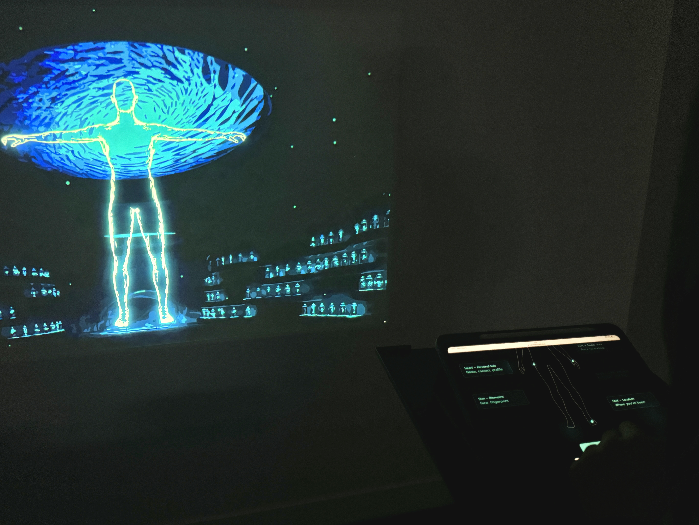

Immersive Experience & Interactive Installation
Data "Skinware": Interactive
Visualizing Digital Vulnerabilities Through Interactive Costume Metaphors 2025

Data Skinware is an interactive installation that visualizes digital vulnerability through metaphor-driven design. Drawing from the imagery of the deep ocean and natural defense systems, the project imagines a "data skin"—a speculative protective layer that forms around the digital body based on user behavior. Through a dual-screen experience combining a narrative survey and a real-time projected costume, participants see their data exposure visualized on a human figure. The project aims to transform abstract cybersecurity concerns into tangible, emotionally resonant interactions that promote reflection and awareness.
* This project is an undergraduate Thesis design project. The paper is not a formal academic paper, but more for exploration. Read the full paper here:
View Full ResearchDrawing from the imagery of the deep ocean and natural defense systems, the project imagines a "data skin"—a speculative protective layer that forms around the digital body based on user behavior.

Through a dual-screen experience combining a narrative survey and a real-time projected costume, participants see their data exposure visualized on a human figure. The project aims to transform abstract cybersecurity concerns into tangible, emotionally resonant interactions that promote reflection and awareness.
Considering the project's web-based nature, it can be shared broadly across digital platforms and experienced on personal devices. Please feel free to enjoy them on your own devices:)